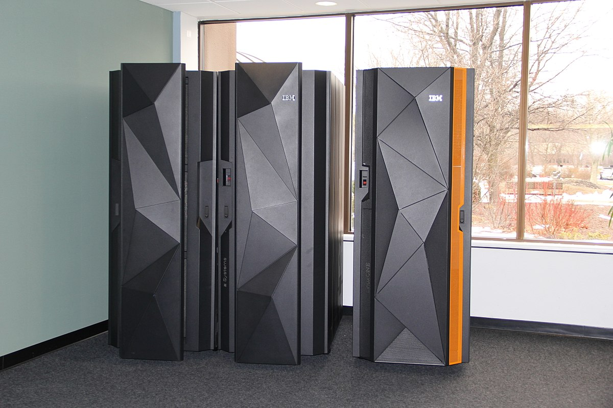

Перейти на первую страницу сайта
Перейти на третью страницу сайта
Перейти на четвёртую страницу сайта
В течение 1960-1970-х годов в университетской и научной среде США продолжали создаваться различные игры — как учебные программы, как упражнения в программировании и просто для развлечения студентов. Их количество и сложность росли по мере того, как компьютеры (мейнфреймы) становились всё более доступными, с развитием языков программирования и появлением первых компьютерных сетей (ARPAnet), позволявших пользователям взаимодействовать друг с другом и делиться программами. Система электронного обучения PLATO, особенно с запущенного в 1972 году поколения PLATO IV, стала особенно удобной для подобных проектов — на ней появились собственные версии Spacewar! и шахмат, многопользовательские стратегические 4X-игры наподобие Empire и Star Trek (1972); адаптации настольных ролевых игр типа Dungeons & Dragons — dnd[en] (1974) и pedit5[en] (1975). Oregon Trail (1971), написанная для мейнфрейма HP 2100, предвосхитила симуляторы выживания; Maze War (1973) и Spasim (1974) стали первыми трёхмерными компьютерными играми.Текстовая игра Colossal Cave Adventure (1975) для мейнфрейма PDP-10, совмещавшая в себе симулятор спелеолога и элементы фэнтези в духе Dungeons & Dragons, открыла дорогу для квестов и interactive fiction. Если первые компьютерные ролевые игры, как dnd и pedit5, были относительно примитивными, их наследники становились всё сложнее — игры наподобие Moria (1975), Oubliette (1977) и Avatar(1979) использовали уже вид от первого лица, сложные многоуровневые подземелья и множество параметров для настройки персонажей.
